A组
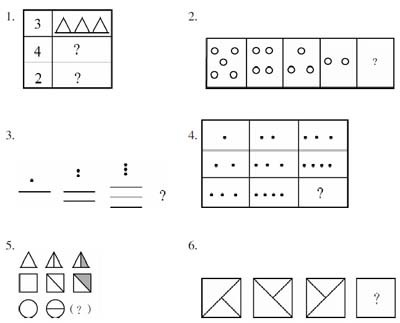
B组
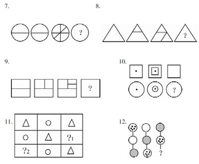
C组
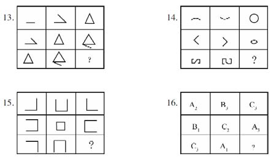
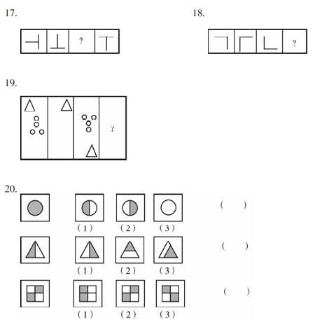
D组
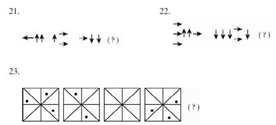
24.□□△○○△□□???△○○△
E组
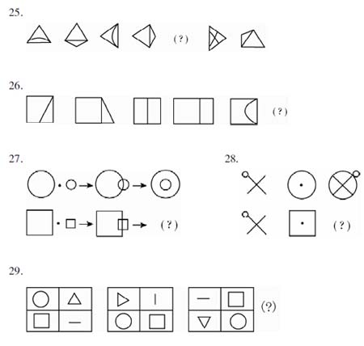
【答案】
A组：
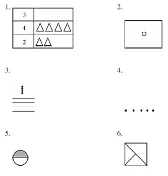
B组：
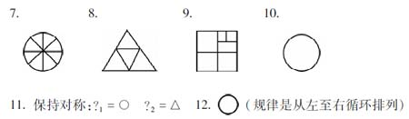
C组：
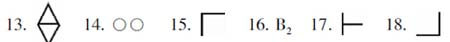
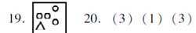
D组：
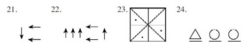
E组：
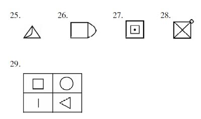
A组
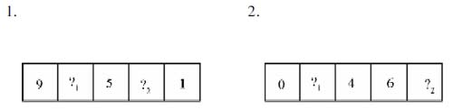
3.图73如图73中能画分出几个这样大的■？
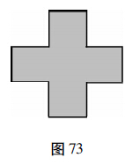
4.图74如图74中能画分出几个这样大的□？
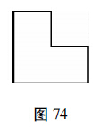
5.图75空着的格分别填几？
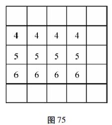
6.如图76中有多少个■，有多少个□？阴影正方形和空白正方形一共有多少个？
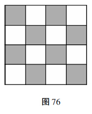
B组
7.1 2 3 4 5 6 7 8 9 0表格中共有多少个数字？
8.7 4 8 3 9 4 3 6 6 6表格中共有几个大小不同的数字？
9.
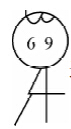
这个小朋友是用哪几个数字组成的？10.
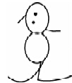
从这个小人中你能找出多少个数字？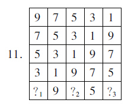
12.图77中共有16个小方格，阴影部分的大小等于（ ）个小方格？
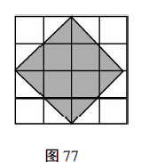
C组
13~16图中能画分出几个这样的大的 ？
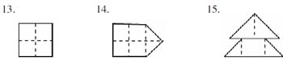
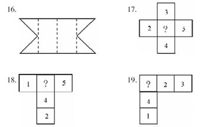
D组
20.图78中有几个三角形？
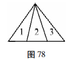
21.图79中有几个梯形？
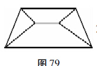
22.图80中有几个正方形？
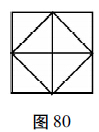
23.图81中有几个长方形？
24.图82中有几个平行四边形？
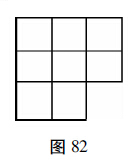
25.图83中有几个长方形？
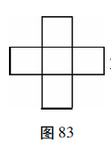
26.图84中有几个平行四边形？
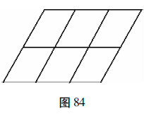
27.图85中有多少个三角形？
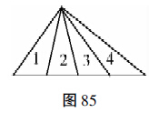
E组
28.把1~7这七个数填入“工字”图的七个圆圈内，使每条线上3个数的和都是12（每个数只用一次），见图86。
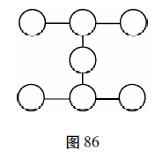
29.把1~7这七个数填入“人字”图的七个圆圈内，使每条线上3个数的和都等于14，见图87。
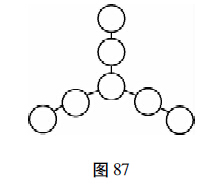
30.把1~6各数填入“八一”的六个方格里，使每一直线上的两数和是7，见图88。
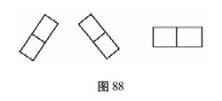
31.把1~10各数填入“六一”的十个方格里，使每一直线上两个数或3个数和是12，见图89。
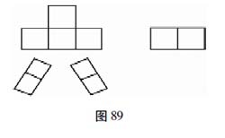
F组
32.有两个数，差正好等于被减数，这两个数可以是多少？
□-□=□
33.有两个数，和正好等于其中一个加数，这两个数可以是多少？
□+□=□
34.把A、B、C处填上适当的数，使方阵的每竖行上3个数的和相等。
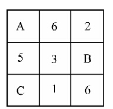
35.把1、3、5、7、9五个数分别填入方阵的5个空格里，使每横行、每竖行上3个数的和相等。
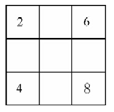
36.
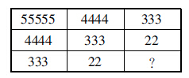
37.在每个方格内填上一个数字，只能填1、2、3、4四个数字。要求不论横看，竖看，还是斜看，4个格的数字和都是10，即每一横行、竖行、斜行上的4个数字互不相同。怎样填？
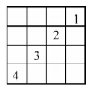
【答案】
A组：
1.？1 =7，？2 =3；2.？1 =2，？2 =8；3.5个；4.3个；
5.1至5行分别填3，4，5，6，7；6.8个，8个，16个。
B组：
7.10个；8.6个；9.0，1，3，4，6，9；10.2，3，6，8，9；
11.？1 =1，？2 =7，？3 =3；12.8。
C组：
13.8个；14.10个；15.6个；16.12个；17.1；18.3；19.5。
D组：
20.6个；21.3个；22.6个；23.7个；24.11个；25.11个；
26.18个；27.10个。
E组：
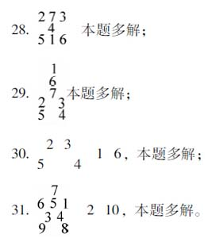
F组：
32.7、0，8、0，等等；
33.7、0，8、0，等等；
34.A=2，B=2，C=3；
35.第2行为9、5、1；
36.1；
37.角上只能填2和3，先在角上填好2和3，其他就好确定了。
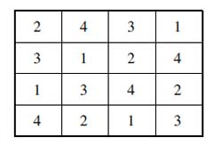
A组
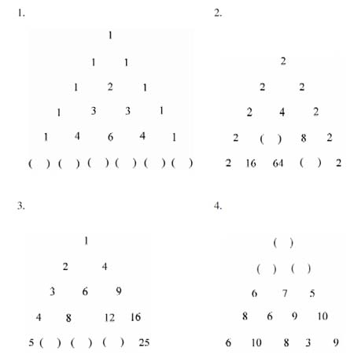
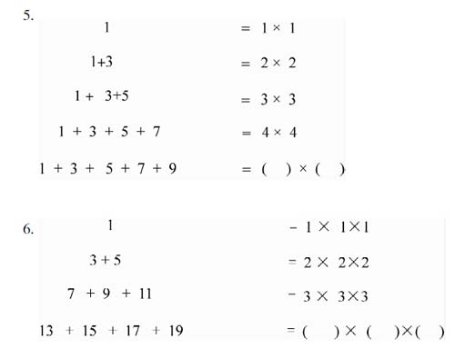
B组
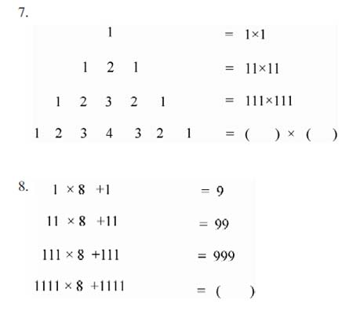
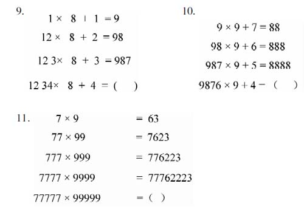
C组
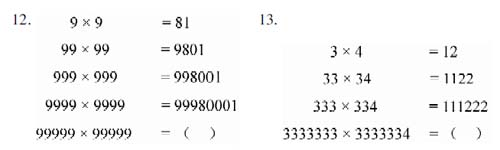
【答案】
A组：
1.1、5、10、10、5、1；2.8、16；3.10、15、20；4.规律：下一行相邻两数中，大数减去小数，再加4，即是这两个数上面的那个数，因此应填5、5、6；5.5×5；6.4×4×4。
B组：
7.1111×1111；8.9999；9.9876；
10.88888；11.7777622223。
C组：
12.9999800001；13.11111112222222。
A组
1.找规律填数：（1）2、9、23、44、72、（ ），（2）2、4、8、（ ）、（ ）、（ ）。
2.下面是由9个小方格组成的图形。每一横行小方格中的三个数之间都有相同的运算关系。现在中心方格中的一个数被擦掉了，你能准确地补上吗？
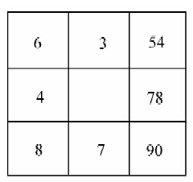
3.“井”字形中的数字是按一定规则写上的，A位置的数被擦掉了，A应是什么数？
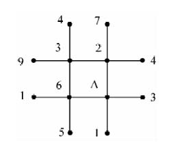
4.图中共有16个小方格，方格中的数字是按照一定规则排列的，你能找出这个规则，并按这个规则把四个角上的空格填好吗？
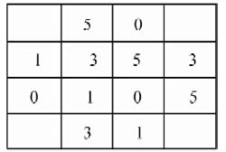
5.将1至5这五个数字（每个数字用五次）排在图中的方格内，使每一横行、竖行和对角线的五个格中，都有1至5这五个数字，该怎么填？
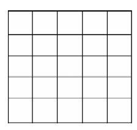
6.将11~17七个数填入圆圈内，使每条线上三个数的和相等。
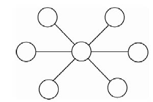
7.将1~10这十个数字分别填入图中各小正方格内，使每边的数字之和等于18、19、20或22。
8.把1、2、3、4、8、12这六个数填入下图中的6个小圆圈内，使每个大圆圈上的3个数的乘积都相等。
B组
11.把3、7、8、2四个数分别填入算式括号中，使算式成立。
（ ）（ ）（ ）×（ ）=1981
12.A、B、C、D各代表什么数字，算式才能成立？
C组
13.在括号内填入适当数字，使算式成立。
14.图中共有大小正三角形7个，请把1至9九个数字分别放在三角形9个顶点的位置上，使每一个三角形3个顶点的数字之和都相等。
15.请你想想，是否能达到下面的要求。将1到7这七个数，填入圆圈内，使在一条线上的圆圈中的数的和相等（注意：图中有6条边和3条对角线）。
【答案】
A组：
1.（1）因为9-2=7×1，23-9=7×2，44-23=7×3，72-44=7×4，所以为（107）；（2）16、32、64或14、22、32（两种填法均有规律）。
2.因为（6+3）×6=54，（8+7）×6=90，所以：（4+9）×6=78。
3.A上面一横行四数之和为18，左面一竖行四数之和也为18，若A=8，则各线上四数之和均为18，所以A=8。
4.规则：从右下角起，沿箭头所指的路线，依次循环排列0、1、3、5。
5.填数规律：先填好第一横行1、2、3、4、5，然后按对角、横、竖兼顾填某一数字，再逐一填其他数字。填数路线如图，图中仅标出填5、填4的路线。
8.
B组：
9.“太”表示8，“好”表示9，“了”表示1（答案不唯一）
10.a=3，b=9
11.287×3=1981
12.1784+178+17+1=1980
C组：
13.
14.边上3个小三角形的顶点恰好是9个不同数字，因此每一个三角形的顶点数字之和是45÷3=15；而每一个三角形3个数应是三阶纵横图横行、纵行或一条对角线上的3个数字。解本题关键是推算出中间小三角形的3个数字。如图90，由三阶纵横图的二条对角线之一上的3个数放在中间三角形的顶点处，其余6个三角形顶点上放的数，也必然是纵横图上三条横行和三条纵列上的数。由此就能推算出下面两个解答。
15.图中共有9条线，而每个圆圈都在某三条线上，要求9条线上的数和都相等，和应该是（1+2+3+4+5+6+7）×3÷9=28÷3，这个和不是整数，所以题目的要求不可能达到。
A组
1.鱼缸里有9条金鱼，走近一看死了两条，这时鱼缸里还有几条金鱼？
2.王爷爷共有三个儿子都结婚了，王爷爷还有几个儿子？
3.屋内亮着7盏灯，关掉3盏，屋里还有几盏灯？
4.父子俩对手下棋，每人都下了五盘，他们共下了几盘棋？
5.一面五星红旗上有两种颜色（红、黄），10面五星红旗上共有多少种颜色？
B组
6.一个人唱完《学雷锋》这支歌用2分钟，3个人唱完《学雷锋》这支歌最少用几分钟？
4.妈妈煮熟一个鸡蛋要用8分钟，煮熟三个鸡蛋最少要用几分钟？
8.划着一根火柴用1秒钟，划着4根火柴最少用几秒钟？
9.三个人合下了3小时跳棋，每人下了几小时？
10.三匹马拉着一台大车向前跑了6米，每匹马向前跑了多少米？
11.一位老师到学生家去家访，看到妈妈面前有3个女孩，便问：“你只有这三个女儿吗？”妈妈说：“何止这3个，她们每人都有一个哥哥。”请问这家共有几个孩子？
C组
12.树上落了3只鸟，猎人开枪打下一只，树上还有几只？
13.沙滩上落了3只鸟，猎人开枪打死一只，沙滩上还有几只鸟？
14.平放的桌面上落了3只苍蝇，有人打死了一只，桌面上还有几只？
15.河面上落了3只水鸟，猎人开枪打死一只，此刻河面上活着的还有几只？
16.小明在环形跑道上练习跑步，他前边有3个人，后边也有3个人，算一算，正在练习跑步的有多少人？
17.小明家有4个哥哥和4个弟弟，但并不是9个兄弟。他家到底有兄弟多少人？
18.1+1在什么时候不等于2？
【答案】
A组：
1.9条；
2.3个（结婚的儿子还是他的儿子）；
3.7盏（关掉的灯还是灯）；
4.5盘；
5.红黄两种颜色；
B组：
6.2分钟，合唱；
7.8分钟，一起煮；
8.1秒种，一起划；
9.3小时（因为三个人合下）；
10.6米；
11.4个，1个大的是哥哥，3个小的是他妹妹。
C组：
12.0只，因为另两只鸟听到枪声吓跑了；
13.1只，“死的”；
14.1只，“死的”；
15.0只，“一死二飞”；
16.3+1=4，4人，此题可画图帮助学生理解；
17.5人，注：此题与“小明有4个哥哥和4个弟弟，他家有兄弟多少人？”问法不同；
18.一种情况，在算错的时候不等于2；另一种情况，在“二进制”中“1+1=10”。
A组
1.一支铅笔两个头，两支半铅笔共有几个头？
2.50只山羊中有20只母羊，有多少只长胡子的羊？
3.妈妈在一个盘子里放了7个水果，其中有3个苹果，午饭后全家人吃完了全部水果，午饭后吃了几个苹果？
4.一只兔子朝南跑了9米，再向西跑了12米，问这时兔子的尾巴朝哪个方向？
5.一个牧羊人有17只山羊，除了9只以外都死了，他还剩下多少只活羊？
6.天平上放着8只乒乓球，两边正好平衡，小红跑过来拿走了一只白球，天平上还剩几只乒乓球？
7.爸爸问小明说：“两只母鸡共生3个蛋，你说每只鸡各生了几个蛋？”小明非常肯定地说：“每只鸡各生了一个半蛋。”你说小明答得对吗？
8.2只母鸡和1只公鸡共生6个蛋，平均每只下蛋的鸡生了几个蛋？
B组
9.一排队伍10个人，往前走了100米。问这一排中第一个人与最后一个人谁走的路远？
10.一张卡片上写有1、2、3、4、5、6六个不同的数字，两张这样的卡片上写有多少个不同的数字？
11.被减数比减数大5，差是多少？
12.什么数加上8，再减去8，还得8？
13.男女生二重唱、女生独唱、男生独唱，这三个节目至少要几位歌唱演员？
14.有两双不同颜色的袜子放在一个口袋里，请你想一想，一次最少取出几只，才能保证有两只颜色相同的袜子？
15.张三有5支铅笔，李四有12支铅笔，李四给张三几支整根铅笔两人的铅笔数才能相等？
16.客车里有6名乘客，到车站时有5个人下车，3人上车。下一站是终点站，请问车到终点站时一共有几个人下车？为什么？
C组
17.老师说：“在我语文书的第27页与28页之间夹着5元钱，请你帮我取出来”。你能取出来吗？
18.老师问李明同学：“你是几月几日生的？李明回答说：“我是2月30日生的”。大家笑了，你知道笑什么吗？
19.黑板上写着一个算式“1+2=3”，小明说算式错了。上句话到底错了没有。
20.在一段上坡路上，有一人在前面拉车，有一小孩在后面推车，两人汗水淋淋。过路人问前面拉车的人：“在后面推车的是你的儿子吗？“回答说：“是的”。随后问后面推车的人：“在前面拉车的是你的父亲吗？”回答说：“根本不是。”那么拉车人与推车人是什么关系？
【答案】
A组：
1.6个；2.山羊都长胡子的有50只；3.3个；4.朝上；5.9只；6.一只也不剩了。因为取走一只球后，天平失去了平衡，其他7个球自然滚落下来；7.不对，因为鸡不能生半个蛋。答案是：一只鸡生了2个，另一只鸡生了1个或一只鸡生了3个，另一只生了0个；8.平均每只下蛋的鸡生了3个蛋。因为公鸡不生蛋。
B组：
9.一样远；10.6个；11.5；12.8；13.2位；14.3只；15.给几支也不会相等；16.6个人下车。因为要把司机和售票员计算在内。
C组：
17.不能，因为27页、28页是一张纸；18.2月没有30日；19.错了，错在小明把本来没有错的算式，说成是错误的算式；20.母亲和儿子的关系。
A组
1.小华的爸爸1分钟可以剪好5只自己的指甲。他在5分钟内可以剪好几只自己的指甲？
2.小华带50元钱去商店买一个价值38元的小汽车，但售货员只找给他2元钱，这是为什么？
3.小军说：“我昨天去钓鱼，钓了一条无尾鱼，两条无头的鱼，三条半截的鱼。你猜我一共钓了几条鱼？”同学们猜猜小军一共钓了几条鱼？
4.6匹马拉着一架大车跑了3千米，每匹马跑了多少千米？6匹马一共跑了多少千米？
5.一只绑在树干上的小狗，贪吃地上的一根骨头，但绳子不够长，差了5厘米。你能教小狗用什么办法抓着骨头呢？
B组
6.王某从甲地去乙地，1分钟后，李某从乙地去甲地。当王某和李某在途中相遇时，哪一位离甲地较远一些？
7.时钟刚敲了13下，你现在应该怎么做？
8.在广阔的草地上，有一头牛在吃草。这头牛一年才吃了草地上一半的草。问，它要把草地上的草全部吃光，需要几年？
9.妈妈有7块糖，想平均分给三个孩子，但又不愿把余下的糖切开，妈妈怎么办好呢？
10.公园的路旁有一排树，每棵树之间相隔3米，请问第一棵树和第六棵树之间相隔多少米？
C组
11.一个房子4个角，一个角有一只猫，每只猫前面有3只猫，请问房里共有几只猫？
12.一个房子4个角，一个角有一只猫，每只猫前面有4只猫，请问房里共有几只猫？
13.小军、小红、小平3个人下棋，总共下了3盘。问他们各下了几盘棋？（每盘棋是两个人下的）
14.小明和小华每人有一包糖，但是不知道每包里有几块。只知道小明给了小华8块后，小华又给了小明14块，这时两人包里的糖的块数正好同样多。同学们，你说原来谁的糖多？多几块？
【答案】
A组：
1.20只，包括手指甲和脚指甲；
2.因为他付给售货员40元，所以只找给他2元；
3.0条，因为他钓的鱼是不存在的；
4.3千米，18千米；
5.只要教小狗转过身子用后脚抓骨头，就行了。
B组：
6.他们相遇时，是在同一地方，所以两人离甲地同样远；
7.应该修理时钟；
8.它永远不会把草吃光，因为草会不断生长；
9.妈妈先吃一块，再分给每个孩子两块；
10.15米；
C组：
11.4只；
12.5只；
13.2盘；
14.原来小华糖多；14-8=6块，因为多给了6块两人糖的块数正好同样多，所以原来小华比小明多12块。A组
1.3米深的井，井底没水却有一只青蛙，青蛙每次跳1米高，几次能跳出井来？
2.100只青蛙在池塘边搏杀，死去了30只。试问：还有多少只青蛙？
3.有一对姐妹，妹妹说：“十年后，我和姐姐的年龄一样大。”这可能吗？
4.有一样东西本来是你的，但是别人用的时间多，自己几乎不用，这是什么东西？
5.把一支铅笔放在地上，要使任何人都无法跨过去，应该怎样放？
6.把3只苹果，分放在2块圆形桌布上，你能否使每块桌布上有2个苹果吗？
7.姐姐的铅笔比弟弟多6支，姐姐给弟弟6支以后，两人的铅笔支数一样多吗？
8.小明和小青在捕捉蝴蝶和蛾子。小明上午十点钟用捕虫网捕到20只，小青晚上十点在灯光下捕到15只。你说，他们共捕到几只蝴蝶和几只蛾子？
B组
9.两个妈妈带着两个孩子去看电影，买了两张票，结果四个人都从门进去看电影了。这个电影院把门的规定：1米以下小孩禁止入内（包括1米高小孩），超过1米的小孩入场必须买票。请问这四个人为什么能进去？
10.一张唱片上唱针走的“纹”有几条？
11.9个一分硬币中有一个是假的，给你一架不带砝码的天平，你最少称几次可能找出那个假币？（假币比真币轻一点）
12.每头牛吃完一捆草用1小时，三头牛吃完三捆草最少用几小时？
13.1=11，上式用火柴棍摆成，移动一根使等成立。
14.小明比小军小5岁，小红比小明大2岁，小军和小红相差几岁？
15.用五个“1”和一个数学符号写出一个等于100的算式。
16.在一间空房里，随意坐着4个人，允许他们随意转动，请你想一想，这4个人都能看见每个人的脸吗？为什么？
C组
17.有一段透明的软塑料管，里面装着7个球，其中一个黑球夹在6个白球的中间。不倒出白球，能否取出黑球？（塑料管刚好使球通过，为了取球不许把塑料管剪断）
18.一个和尚对一位练武的人说：“现在我用一支毛笔在你的周围画一个圆圈，这个圆圈你是永远也跳跃不过去的。”说完和尚提笔就画了一个圆圈，练武的人怎么跳也没跳过去，请问这个圈的秘密在哪里？
19.小虎告诉我，他家养了同样大小的红色和黑色的金鱼。但是，让我不明白的是，他说：“黑色金鱼每天要比红色金鱼多吃5倍的鱼虫。”这是怎么回事？
20.一堆西瓜，一半的一半的一半比一半的一半少半个，这堆西瓜有多少个？
【答案】
A组：
1.永远也跳不出来。因为它不能停在空中再往上跳；
2.100只；
3.可能，如双包胎或同年1月和12月分别出生的姐妹；
4.你的姓名；
5.应该把铅笔放在类似墙角的地方；
6.见图
7.不一样；
8.因为蝴蝶一般在白天活动，蛾子一般在夜晚活动，所以他们共捕到20只蝴蝶，15只蛾子。
B组：
9.两个妈妈都是怀孩子的人；
10.2条（正反面各一条）；
11.一次（抓住最“最少”、“可能”两词思考）；
12.1小时，三头牛同时吃；
13.1=1；
14.5-2=3岁；
15.111-11；
16.不可能，因为每个自己看不见自己的脸。
C组：
17.能，把软塑料管两头对好，揻成圆圈，把3个白球倒入另一侧，黑球就出来了；
18.在练武人的身体上画了一个圈；
19.因为黑色金鱼的数量是红色金鱼的6倍；
20.4个（可画线段图分析）。
A组
1.汽车向前行驶1000米，哪个车轮前进的路段最长？
2.汽车前进时哪个轮胎不动？
3.小红有许多球，平均每10个球中有一个是红的；小军也有许多球，平均每10个中有一个是红的，小红和小军的球放在一起，平均每10个球中有几个红色的球？
4.有形状大小相同的红、白两种纸片各10张，放在一起仔细随便拆开，然后再分成各10张的甲、乙两堆。如果这样分14次，有多少次甲堆中的红纸片数和乙堆中的白纸片数相等？
5.小勇做投弹练习，每2分钟扔一个，刚过2分钟，他扔出几颗手榴弹？
6.我买某种东西，结果吃一个要花5角钱；吃2个也要花5角钱，吃3个，吃4个，吃5个还是要花5角钱，请回答我买的是什么东西？（说出一种符合本题条件的就行）
7.买相同的东西，买一个得80元；而买两个得60元，如何解释？
8.不用直尺、三角尺等尺子能否画出直线？为什么？
B组
9.在乘法中，因数越多乘积越大对吗？
10.两个母亲给自己的女儿零用钱，一个母亲给了自己的女儿12元，另一个母亲给了自己的女儿8元，两个女儿把所得的钱加在一起却只有12元，这是为什么？
11.有人说：“我研究出一种液体，无论什么东西，只要一接触这种液体，顷刻之间就会被完全溶化。”你说这句话有没有矛盾？
12.5个小朋友一起吃5个饼要用5分钟，80个小朋友一起吃120张饼要用多少分钟？
13.有一个人喝一杯牛奶，他喝去半杯后用开水加满，又喝去半杯后又用水加满，再全部喝完。问他一共喝了多少牛奶和多少水？
14.两只蜻蜓和两只蝴蝶共有多少只足？
15.甲车从家出发去拉货，去时和回来时走相同的路线，用的时间相同，并且按时到家。结果去时路上车多，速度减少一半，于是打算回来时速度增加一倍。请问这种变化之后，甲车能否按计划时间到家？（车在路上之外装卸货所用的时间和计划一样。）
16.6月1日是小明的生日，爸爸通知了3个小朋友，妈妈通知了2个小朋友参加晚上的庆祝活动。晚上爸爸妈妈通知的小朋友全来了。问前来参加庆祝活动的小朋友有几人？
C组
17.小花猪卖菜1千克3角。黑羊和白兔问他1千克卖2角卖不卖。小花猪不卖。黑羊说：“我买茎1千克2角，白兔买叶1千克2角，这样1千克菜卖4角，卖不卖？”小花猪想了一会，高兴地说：“卖给你们。”黑羊买了菜的茎，白兔买了菜的叶走了。请你算一算，小花猪卖的菜到底合多少钱1千克？
18.我把一张长方形纸条对折，结果一面比另一面长1厘米。我又重新对折，结果原来短1厘米的一面这次又长出1厘米。请回答，纸条上两次折痕的间隔是多少厘米？
19.你从生下来到现在，睁眼的次数多还是闭眼的次数多？
【答案】
A组：
1.一样长，都是1000米；
2.备用胎；
3.1个；
4.14次，分一千次都相等；
5.2个；
6.5个一串的糖葫芦；
7.用100元钱买这个东西，买一个找回80元，买两个找回60元；
8.能，因为任意两点确定一条直线，所以用绳子或借助某些客观条件能画出直线。
B组：
9.不对，如：1×1×1×1=1；
10.因为母亲是姥姥的女儿，我（女儿）是母亲的女儿；
11.有；既然无论什么东西只要一接触这种液体，顷刻之间就会完全溶化，那么什么容器能装这种液体呢？显然没有。没有能装此液体的容器，所以这种液体就不存在；
12.7.5分钟；
13.各1杯；
14.每个昆虫都有6只足，蜻蜓和蝴蝶都是昆虫，所以共有24只足；
15.不能，因为去时速度减半，时间用去计划的2倍，这往返时间全部用完。回来无论多么快，哪怕是坐火箭也不能按计划时间到家；
16.爸爸妈妈在通知小朋友前不知商量过没有，他们通知的人可能有重复，也可能没有重复，所以有3人或4人或5人。
C组：
17.2角钱1千克；
18.1厘米；
19.如果生下来睁眼，现在闭眼，或生下来闭眼，现在睁眼，那么次数相等。如果，生下来睁眼，现在也睁眼，那么睁眼的次数比闭眼的次数多一次。如果生下来闭眼，现在也闭眼，那么睁眼的次数比闭眼的次数少一次。
A组
1.剪4个一样大的直角三角形，拼成（1）1个正方形，（2）1个长方形，1个大三角形。
2.用一张正方形纸剪成两个一样大的梯形。
3.用一张长方形纸剪成16个一样大的三角形。
4.先剪一个平行四边形，然后再把它剪成两部分拼成一个长方形。
B组
5.用硬纸剪成4个圆环形和4条短杆，拼成19和86。
6.破密码。用纸板剪一个大圆，再剪一个小圆，分别写上数字，然后把小圆放在大圆的上面（见图91）。只要把内圆和外圆的数对齐并相减，当所得到的数完全相等时，密码就算破出来。比一比，看谁先把图91做好，谁先破出密码。
C组
7.怎样在长方形纸上一刀剪出个五角星？
8.小纸条变五角星。不用圆规和直尺，只用一张长方形小纸条来帮助，你能画出一个标准的五角星吗？
【答案】
A组：
1.
B组：
C组：
7.把纸先对折起来然后照下图折成5等份（直角），再把阴影部分剪掉，将纸展开就成一个五角星。[注：（1）“0~1”长等于“0~3”长的1/3，“0~3”线垂直于“3~4”线。（2）从“1~3”间任何一点与“4”连线，剪开得到的五角星都不太好看。从“1~4”连线剪开，得到一个正五角星。（3）剪五角星的办法不唯一。]
8.裁一条长方形的纸条，宽2厘米，长20厘米。打一结[见下图（a）]，轻轻地抽紧压平[见下图（b）]。连结四根对角线[见下图（c）]，就是一个标准的五角星。
A组
1.如图92所示，一根绳子上挂着5个铁环，现在请你把当中的一只铁环拿下来，但是不能把绳子剪断，也不能先拿下其他铁环，怎么拿？
2.见93图（a），把橡皮筋1、2、3、4套在左手的手指上，不动1、2、3，只把4移到图（b）的位置上，该怎么移？
3.如图94所示，有人安全地把两根高高的绳子解下来做其他用，它是怎么解的？（要求顺绳上，顺绳下，在上停留解绳时，只有一只手可以自由活动解绳，但不能系绳。他没有用木棒、梯子等一切工具。）
4.只给你一个火柴盒，不用手摸烟，一下将烟盒左边的五支香烟整齐地移到烟盒右边怎么移？
5.杯子一个，铁锁一把，火柴两根，怎样用两根火柴将一把铁锁挂在杯子壁外？
B组
6.观察下列减法算式，你发现了什么？请动手再举几例试试。
（1）21-12=9×1，43-34=9×1，98-89=9×1；
（2）31-13=9×2，85-67=9×2，44-26=9×2；
（3）41-14=9×3，44-17=9×3，56-29=9×3；
（4）52-16=9×4，71-35=9×4，93-57=9×4。
7.将扑克牌去掉10和10以上的牌（A代表1）后，分发到若干人手中，让每人任意抽出一张牌，看一下余牌就知道抽出的牌是几。请问是怎么知道的？
8.如95图所示，每一横行，图同数不同；每一纵列，数同图不同。请你重新调整数字卡片的位置，使每一横行、每一纵列和两条对角线上，既没有相同的图形，也没有相同的数字。
C组
9.你在纸上写好1至12这十二个数，每个数写一遍，然后让一位同学随意选定一个数记好，不用说出来。你用手指在纸上指点写好的数，并与同学约定，你每点一个数，他就得在原先选定的数上加1；比方说，原先选定的是5，你点一下，他心中默念是6，点两下，他心中默念是7（依次下去），照这样当他加满20时，就喊停。奇妙的是，这时你手指点在他原先选定的那个“5”上。这是为什么？
10.移扑克牌（一人玩游戏）。准备：把三张牌并列排开，在第一张牌上另压上四张牌（分别是4、3、2、1），要求小牌压在大牌的上面。玩法：每次移动一张牌放在三张并列排开的某张牌上，放在哪张牌上都行，但是小牌必须放在大牌的上面。经过移动15次，把第一张牌上压着的四张牌全部移到另外两张并列排开的某张牌上，仍然上小下大。问：秘密何在？
【答案】
A组：
1.（见图96）；
2.拉长4，从2、3、1套过去即可；
3.上绳之前先把下端系好，然后按图97办理；
4.用嘴靠吸气办法移，具体做法略；
5.两根火柴在杯内，可折断使用，如图98所示。
B组：
6.任何有相同数字和的两个两位数相减，其差是一个有因数9的积。这个积中若有两个因数，则另一个因数是两个两位数的个位之差（举例略）；
7.原理：分牌时要使每人分到的牌的数字之和能被9整除，抽掉一张牌后，余牌被9除余数假定是a，则抽出的牌是9-a（0≤a＜9）。
8.
C组：
9.因为20（和）-12（个数）=8，所以他至少要在你点8下时才有可能喊停。于是只要你第八下点在12上，然后沿11、10、9、8…逐个点下去就可以了。注：你掌握了此规律，表演时为了不被人识破，还可以变化一下，如不加到20，加到30或加到18等都可以。
10.第一个回合移动8次，把4移走；第二个回合移动4次，把3移到4上面；第三个回合移动2次，把2移到3上面，最后移动一次，把1移到2上面，于是完成。